Workboat World is a browser VR game: chunky workboats you operate from inside, with physical controls, on a sea with real hydrostatics. It was built in plain English by a naval architect who doesn't write code, working with Claude Code, in sixteen days: the first scaffold on 12 October 2026, v1.0 on about the fifth day, this deck on the 28th. This is the story of how it went.
→ to move on · ← back · click a dot below to jump. The blue dots are live demos.
Played on a Meta Quest 3 at 90 Hz, or on a desktop. Solo, or peer-to-peer with friends in their own boats. No install: a web address.
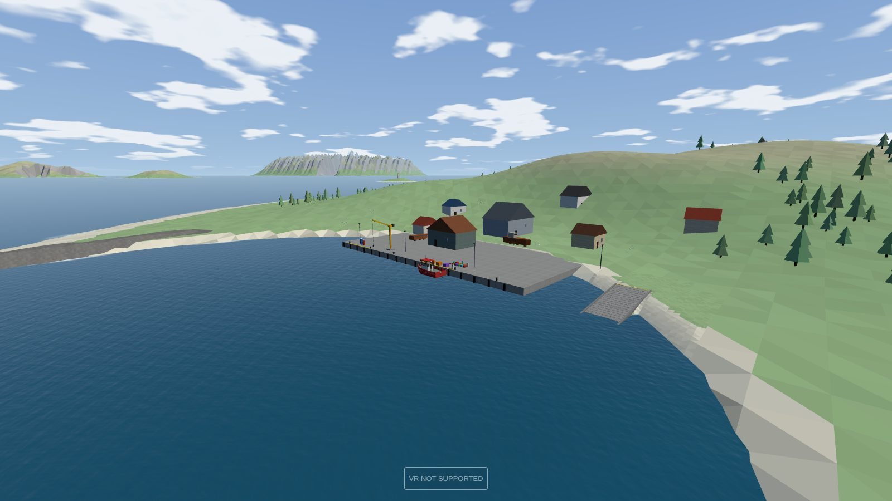
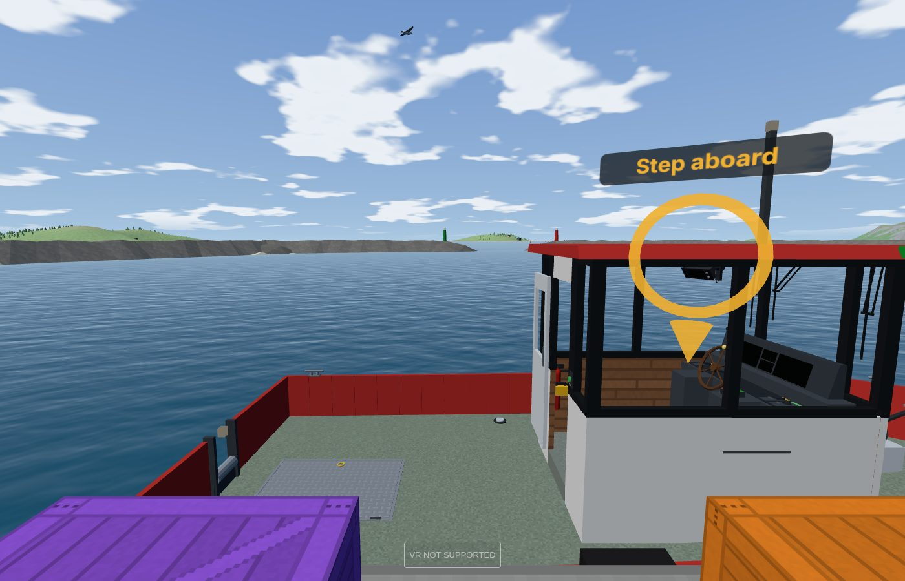
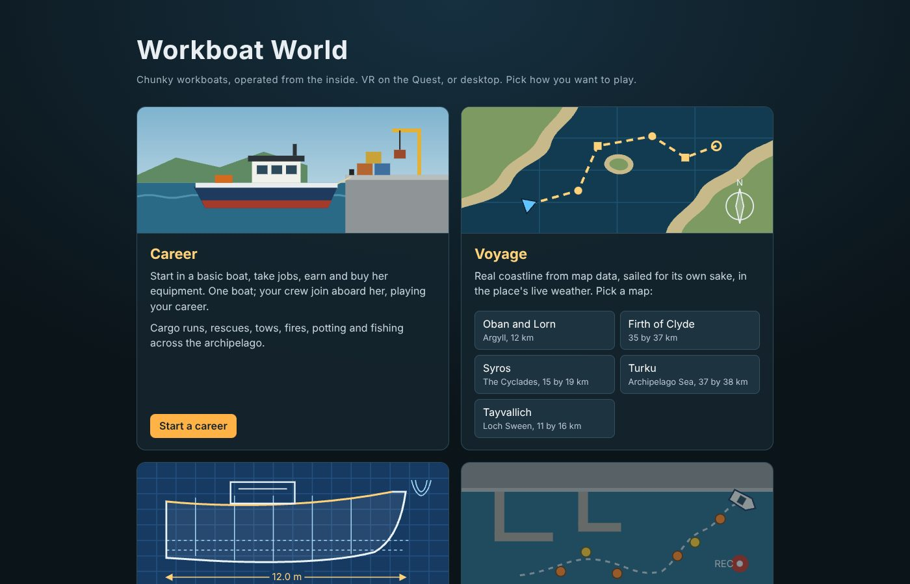
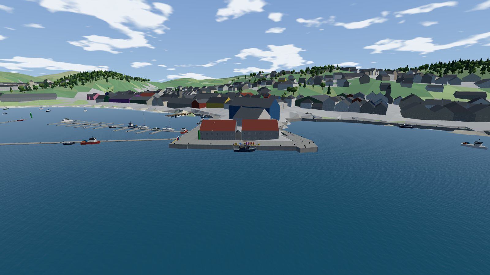
Eight Gerstner wave components live in the world state, so the host can change the weather and every player sees the same sea. The GPU sums them for the picture: one draw call, 1 m cells near you growing 8 % a cell to a 3 km horizon.
The trick is on the CPU: Gerstner waves move the water sideways as well as up, so asking "how high is the water here?" needs the displacement inverted. surfaceHeight(x, z) does it by fixed-point iteration, six passes, under a centimetre in a storm. The yellow probes are that function. They sit on the drawn surface because both do the same sums, and the render runs exactly one tick behind the simulation so they can never drift apart.
Before modular boats, a study: could the game loft hulls the way a naval architect sketches a type? A HullDesign is a few curves along the length, sheer, half-breadth, keel profile, section shape, each a handful of control points joined by a monotone cubic. loft() turns them into stations; buildHullMesh() panels them; hydrostatics() integrates displacement, LCB, LCF, the form coefficients and KM at the design waterline, catamarans included.
Fifteen original types, from a 7 m push tug to a 25 m ASD harbour tug. The shortlist became the game's boats; the harbour tug's lines went straight into the Shipyard as a one-off at 494 t and Cb 0.59.
No physics engine: a hand-written rigid body with semi-implicit Euler, body-axis angular velocity with the gyroscopic term, and added mass per axis. Buoyancy is strip theory on the real hull: each station is a polygon, clipped at the local wave surface every tick, pushing up with ρ·g·A at its immersed centroid. The blue outlines are those stations; the yellow arrows the forces.
That gives displacement, trim and the large-angle GZ curve for free, with deck-edge immersion, and the same stations loft the hull you see. Drop her from 4 m, heel her 20°, or turn the sea up and watch her roll. The owner's first drop test found a bow-up rebound; it was missing water-entry energy loss, and the fix is a quadratic water-entry drag.
One 12 m displacement workboat, a hand-built archipelago, and a career. Tagged by the owner as the restore point before the next big step.
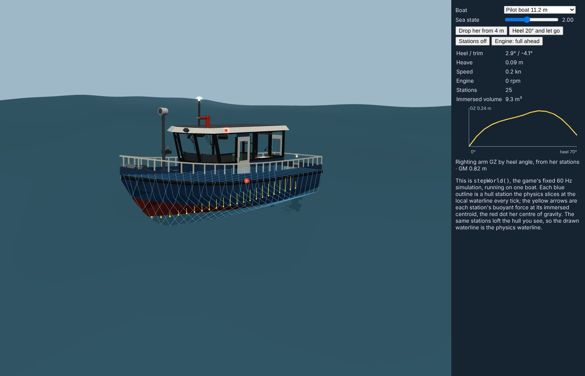
The next step was to make every boat out of modules, so the Shipyard could build any of them. A module has two halves: a simulation half (plain functions over plain JSON, host only) and a view half (meshes and controls, every player). Modules never import each other; they only read and write named keys on a bus: throttle.demand, engine.rpm. A recipe says which module goes in which socket, with interlocks like hatch.engine.open == false.
The refactor took seven milestones and nothing was allowed to look or handle differently. Twelve golden runs had to reproduce to nine significant figures; screenshots had to be pixel-identical; draw calls could only fall. They did: 67 → 56 at the helm, 120 → 95 on the aft deck, because every toggle bat became one instanced mesh.
The Shipyard is a page where you pick a hull type and move sliders. Every move runs the game's builder: it scales the hull's lines, weighs her part by part (plating at 35 kg/m² in aluminium or 85 in steel, houses, machinery, gear), then raises or lowers her lines until she displaces exactly that weight. The engine goes on her shaft line where she balances; the wheelhouse and console are fit-checked; a hatch is cut over the engine.
Then the game's own sea trials run on her in a background worker: a halving search over sixteen gearbox ratios so flat out settles at 93 % of rated rpm, then speed, range, turning circle, stopping and bollard pull. Her design is a short code (Crockford base-32 with a check character) you can type in VR, or a shared link; two people can design together over the game's own peer link, with no server.
Once the Shipyard worked, the owner designed the game's own fleet in it: a fast landing craft, a gillnetter, a pilot boat on pod drives, a small tug, the beginner boat, a dive support vessel. Each is kept as her design file and built by the same builder when the game loads, so a bug fixed in the yard is fixed in the fleet.
Hull types ride as their kind: the landing craft planes and banks into turns, the pilot boat is a deep-V, the tug is a displacement hull that puts her power into pull, not speed. When Shipyard boats first capsized in turns, the cause was read off their own GZ curves (a centre of gravity 1.09 m above the waterline) and fixed with a lift-based roll stiffness about the apparent vertical.
The owner's brief: model every harbour the map data has, never just three. An offline tool chain in tools/coast/ reads OpenStreetMap, OpenSeaMap, Copernicus heights, ESA land cover and EMODnet depths, and writes a region as data: the game never calls a data server.
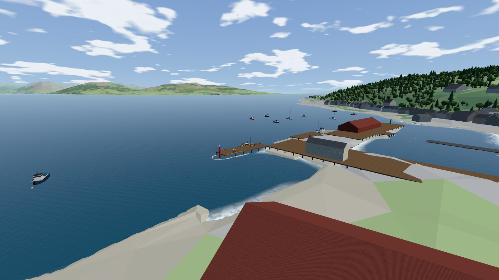
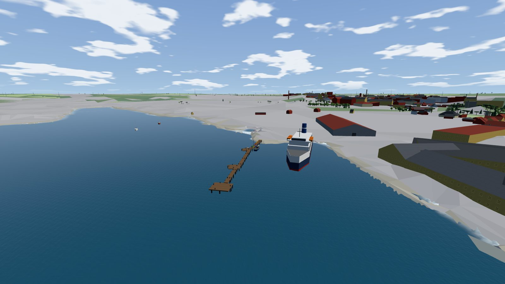
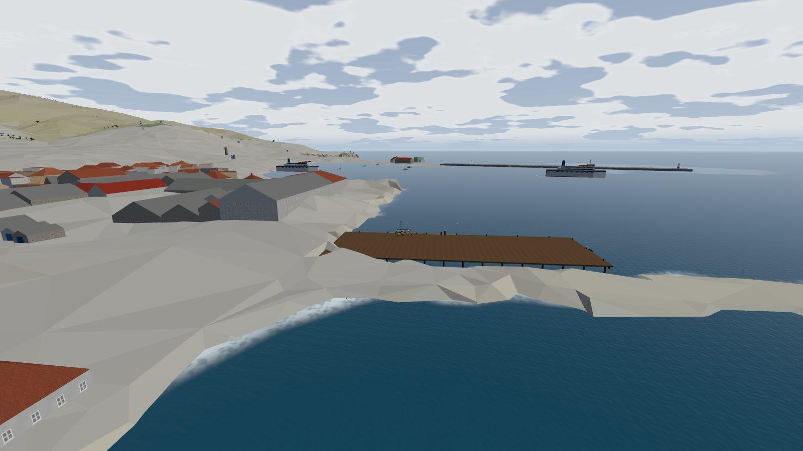
Peer-to-peer over WebRTC (PeerJS, 30 KB; its public broker only introduces peers). The host runs the simulation exactly as in single player. Players send tiny intents; the host sends snapshots twenty times a second, which crew render 0.12 s behind, interpolated, with a smoothed estimate of the host's clock so the waves match.
Because the world was plain JSON from the start, multiplayer never touched the physics. The hard parts were the real world: a 16 KB message limit that only bit once a career's world grew; GitHub Pages caching that put two players on different builds; a host who closes the tab (now every crew page elects the same successor with no messages). Then multi-boat: boats travel by token so any page builds the same type, your boat is the one you're aboard, far boats float on four stations every other tick, and two tugs can push one coaster.
{control:'lever', value:0.8}. Owns their own body pose at 20 Hz.stepWorld() at 60 Hz on the plain-JSON world. Validates every intent. Sends delta snapshots at 20 Hz. If they leave, the earliest joiner takes over after 12 s.The simulation never touches Three.js or the DOM. Views read state and draw it. A control emits an absolute value as an intent and shows the authoritative state except while you hold it. So "multiplayer" was: send the intents somewhere else, and copy the state back.
The owner asked whether the code could be organised so that agents could work on the game, the Shipyard, the modules and the map independently. In a day, a 5,800-line settings file was split into one per area, each area got its own log and its own preview address, and the rules were written into the repo. Each chat merges the shared branch at the start of a change set; a conflict means a shared file, so look at what the other chat did.
src/app/ src/ui/ … → /next/src/shipyard/ → /preview/shipyard/src/modules/ → /preview/modules/tools/coast/ → /preview/map/src/hulls/ → /preview/hulls/23 Oct 2026, the busiest day: the areas split and five chats started; a fetch map with JONSWAP growth so lochs get a short chop and open water a long swell (a gale over 3 km gives 0.56 m at 2.5 s, over 100 km 3.2 m at 7.9 s); a cross-game handoff that hands you to a separate timber game through the address bar and back with logs; the fast catamaran in the physics; Connel Bridge and McCaig's Tower read from OSM; live weather per map. 82 commits.
PROGRESS.md and docs/progress/ in the repository, github.com/tartanski-cpu/SWVR.Everything in this deck is drawn from the project's own logs and code. The live views are the game's modules bundled into this page: the same lofting, builder, assembler, physics step and ocean shader the game runs.
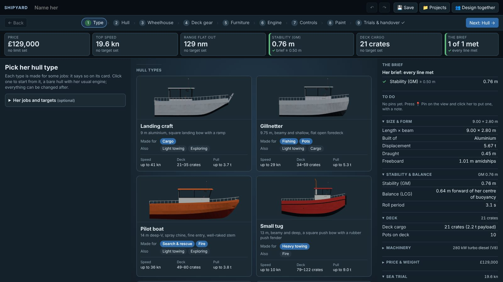
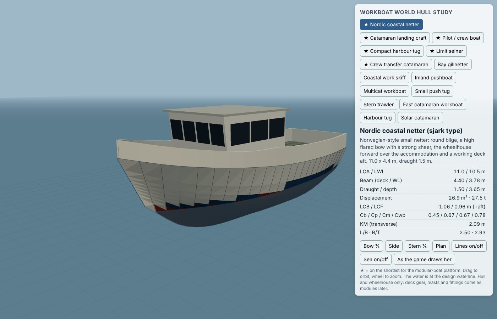
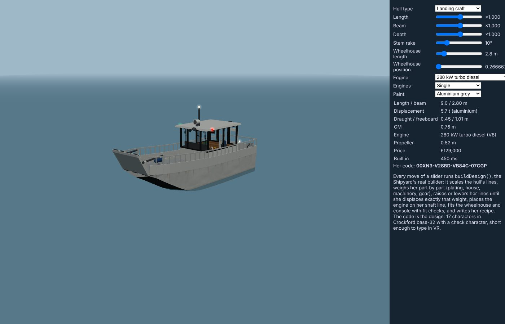